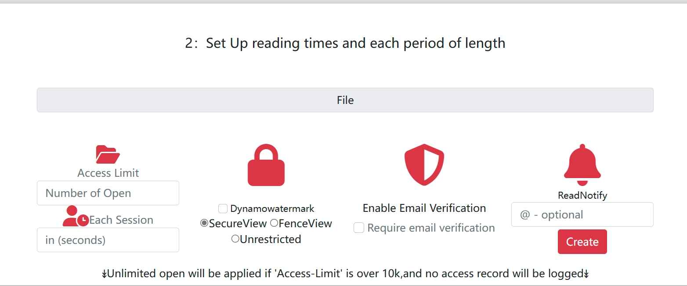

Comparaison des Solutions de Suivi PDF
Analyse comparative détaillée des principales solutions de traçage et d'analyse de documents PDF
Comparaison Visuelle des Fonctionnalités

Exemple de visualisation des données de suivi dans l'interface utilisateur

Configuration des paramètres de suivi et d'analyse de documents PDF
Exemple de Comparaison des Paramètres de Sécurité
Aperçu des Solutions de Suivi PDF
Le marché des outils de suivi PDF offre diverses solutions pour surveiller comment vos documents sont utilisés. Nous avons analysé en profondeur les principaux acteurs du marché pour vous aider à choisir la solution qui répond le mieux à vos besoins spécifiques en matière de sécurité documentaire, d'analyse d'utilisation et de protection de la propriété intellectuelle.
MaiPDF
Solution complète de suivi PDF avec des fonctionnalités avancées d'analyse et de sécurité.
PDFTrack
Solution de base pour le suivi d'activité PDF.
DocuSense
Solution entreprise de suivi documentaire.
Tableau Comparatif Détaillé
| Fonctionnalité | MaiPDF | PDFTrack | DocuSense |
|---|---|---|---|
| FONCTIONNALITÉS DE BASE | |||
| Suivi des ouvertures de documents | |||
| Suivi par page | |||
| Données démographiques des lecteurs | |||
| Rapports d'utilisation | |||
| ANALYSE AVANCÉE | |||
| Temps passé par page | |||
| Cartes de chaleur d'engagement | |||
| Analyse comportementale | |||
| Analyse prédictive | |||
| Rapports personnalisés | |||
| SÉCURITÉ ET CONTRÔLE D'ACCÈS | |||
| Protection par mot de passe | |||
| Filigrane dynamique | |||
| Limitation du nombre de vues | |||
| Restriction géographique | |||
| Détection d'accès suspect | |||
| INTÉGRATION ET COMPATIBILITÉ | |||
| API pour développeurs | |||
| Intégration CRM | |||
| Intégration marketing automation | |||
| Compatibilité mobile | |||
| Fonctionnement hors connexion | |||
| FACTEURS COMMERCIAUX | |||
| Prix mensuel (plan de base) | 9,99€ | 14,99€ | 29,99€ |
| Essai gratuit | 14 jours | 7 jours | Démo seulement |
| Support technique | 24/7 chat et email | Email uniquement | 24/7 tous canaux |
| Documentation | |||
| Facilité d'utilisation | |||
| PERFORMANCE | |||
| Vitesse de chargement des PDF | |||
| Précision des données | |||
| Fiabilité du service | 99.9% uptime | 99.5% uptime | 99.7% uptime |
| Temps de traitement des données | Temps réel | Toutes les 6 heures | Toutes les 2 heures |
= Disponible | = Partiellement disponible | = Non disponible
Points Forts de MaiPDF par rapport à la concurrence
Analyse Comportementale Avancée
Contrairement à ses concurrents, MaiPDF propose une solution complète d'analyse comportementale qui va au-delà des simples statistiques d'ouverture :
- Suivi précis du temps passé sur chaque page avec cartes de chaleur visuelles
- Analyse des modèles de lecture pour comprendre comment les utilisateurs naviguent dans vos documents
- Détection des sections ignorées ou qui génèrent le plus d'engagement
- Prédiction de l'intérêt des utilisateurs basée sur l'intelligence artificielle
PDFTrack n'offre pas de fonctionnalités d'analyse comportementale, tandis que DocuSense propose une solution limitée sans capacités prédictives.
Sécurité et Contrôle Supérieurs
MaiPDF surpasse ses concurrents en matière de sécurité documentaire :
- Filigranes dynamiques personnalisés qui affichent les informations du lecteur
- Contrôle granulaire des accès avec restrictions par adresse IP, localisation et appareil
- Limitation du nombre de vues ou de la durée d'accès par utilisateur
- Système intelligent de détection des comportements suspects avec alertes en temps réel
- Révocation instantanée des accès en cas de violation de sécurité
PDFTrack offre uniquement des protections par mot de passe basiques, tandis que DocuSense propose certaines fonctionnalités avancées mais sans la détection intelligente des comportements suspects.
Intégration et Flexibilité Inégalées
MaiPDF se distingue par sa capacité d'intégration avec vos systèmes existants :
- API robuste et bien documentée pour les développeurs
- Connecteurs natifs pour les principales plateformes CRM (Salesforce, HubSpot, etc.)
- Intégration avec les outils de marketing automation (Marketo, Mailchimp, etc.)
- Capacités de fonctionnement hors ligne uniques sur le marché
- Webhooks personnalisables pour automatiser les workflows
PDFTrack n'offre pas d'API pour développeurs, tandis que DocuSense propose des intégrations limitées principalement orientées entreprise.
Rapport Qualité-Prix Exceptionnel
MaiPDF offre le meilleur équilibre entre fonctionnalités avancées et tarification accessible :
- Prix de base significativement inférieur à celui des concurrents (9,99€ vs 14,99€ pour PDFTrack et 29,99€ pour DocuSense)
- Essai gratuit de 14 jours sans carte de crédit, le plus généreux du marché
- Support technique multi-canal 24/7 inclus dans tous les forfaits
- Mises à jour régulières incluses sans frais supplémentaires
- Pas de limitations artificielles sur les fonctionnalités essentielles
DocuSense, bien que complet, est significativement plus coûteux sans justifier cette différence de prix, tandis que PDFTrack est plus abordable mais manque de nombreuses fonctionnalités essentielles.
Cas d'Utilisation Spécifiques
Entreprises
Solution recommandée :
MaiPDF pour les PME et DocuSense pour les grandes entreprises
Pourquoi MaiPDF est supérieur :
- Meilleur équilibre entre sécurité avancée et facilité d'utilisation
- Intégrations plus flexibles avec les outils d'entreprise existants
- Rapport qualité-prix nettement supérieur pour les PME
- Fonctionnalités d'analyse comportementale plus développées
Quand choisir DocuSense : Uniquement pour les très grandes entreprises nécessitant des options de déploiement sur site et une intégration profonde avec les systèmes de gestion documentaire existants.
Marketing
Solution recommandée :
MaiPDF sans hésitation
Pourquoi MaiPDF est supérieur :
- Analyses comportementales essentielles pour optimiser les documents marketing
- Intégration native avec les principales plateformes de marketing automation
- Cartes de chaleur visuelles pour identifier les sections à fort engagement
- Capacités d'exportation et de partage de rapports plus avancées
Quand choisir un concurrent : Pratiquement jamais pour les cas d'usage marketing, car MaiPDF offre les meilleures fonctionnalités d'analyse et d'optimisation de contenu.
Éducation
Solution recommandée :
MaiPDF ou PDFTrack selon le budget
Pourquoi MaiPDF est supérieur :
- Analyse détaillée de l'engagement des étudiants avec le matériel de cours
- Identification des concepts difficiles basée sur le temps de lecture
- Prix spéciaux pour les institutions éducatives
- Fonctionnalité de quiz intégré non disponible chez les concurrents
Quand choisir PDFTrack : Uniquement pour les petites institutions avec des budgets très limités et des besoins basiques de suivi, sans nécessité d'analyses approfondies.
Juridique
Solution recommandée :
MaiPDF ou DocuSense selon le niveau de sécurité requis
Pourquoi MaiPDF est supérieur :
- Meilleures fonctionnalités pour prouver que les documents ont été consultés
- Système de filigrane dynamique plus avancé pour la protection documentaire
- Meilleure piste d'audit pour la conformité réglementaire
- Interface plus intuitive pour les utilisateurs non techniques
Quand choisir DocuSense : Pour les très grands cabinets d'avocats avec des exigences de sécurité exceptionnelles et des besoins d'intégration complexes avec les systèmes juridiques existants.
Édition
Solution recommandée :
MaiPDF sans équivalent
Pourquoi MaiPDF est supérieur :
- Fonctionnalités de protection contre la copie non autorisée plus robustes
- Analyses détaillées sur les habitudes de lecture pour améliorer le contenu
- Meilleures options pour les extraits et aperçus contrôlés
- Système de gestion des droits numériques plus sophistiqué
Quand choisir un concurrent : Aucun concurrent n'offre actuellement une solution aussi complète pour l'industrie de l'édition.
Santé
Solution recommandée :
DocuSense ou MaiPDF selon les exigences de conformité
Pourquoi DocuSense peut être préférable :
- Certifications spécifiques au secteur de la santé (HIPAA)
- Options de déploiement sur site pour les données sensibles
- Intégrations avec les principaux systèmes de gestion hospitalière
Pourquoi MaiPDF reste compétitif :
- Meilleure interface utilisateur, plus intuitive pour le personnel médical
- Prix plus abordable pour les petites cliniques et cabinets
- Conformité RGPD supérieure pour les établissements européens
Témoignages des Utilisateurs
"Après avoir testé les trois solutions, nous avons choisi MaiPDF pour sa facilité d'utilisation et son excellent rapport qualité-prix. Notre équipe marketing peut désormais analyser précisément comment nos catalogues PDF sont consultés et optimiser notre contenu en conséquence. Les cartes de chaleur d'engagement sont particulièrement utiles."
- Jean Dupont, Directeur Marketing, Entreprise de Distribution"Nous avons d'abord essayé PDFTrack, mais ses fonctionnalités étaient trop limitées pour nos besoins. DocuSense était trop coûteux et complexe. MaiPDF offre le parfait équilibre - des analyses détaillées, une sécurité robuste, et une interface intuitive que toute notre équipe a pu maîtriser rapidement."
- Marie Lefebvre, Responsable de la Communication, Cabinet d'Avocats"En tant qu'éditeur numérique, la protection de nos ebooks est cruciale. Nous avons testé toutes les solutions du marché et MaiPDF est la seule qui combine parfaitement sécurité avancée et analyses détaillées des habitudes de lecture. Cela nous a permis d'améliorer nos contenus tout en protégeant notre propriété intellectuelle."
- Luc Moreau, Directeur Numérique, Maison d'Édition"Notre université utilise MaiPDF pour suivre l'engagement des étudiants avec le matériel de cours. La différence avec nos solutions précédentes est flagrante. Nous pouvons maintenant identifier les concepts que les étudiants trouvent difficiles et améliorer nos supports pédagogiques en conséquence. Un investissement qui a considérablement amélioré nos résultats."
- Professeur Claire Dubois, Responsable Pédagogique, UniversitéQuestions Fréquemment Posées
MaiPDF offre clairement le meilleur rapport qualité-prix avec un prix de départ de 9,99€/mois tout en incluant la plupart des fonctionnalités avancées. PDFTrack est moins cher mais manque de nombreuses fonctionnalités essentielles, tandis que DocuSense est significativement plus coûteux sans apporter de valeur ajoutée proportionnelle pour la majorité des utilisateurs. Pour les petites et moyennes entreprises en particulier, MaiPDF représente l'investissement le plus judicieux.
Les trois solutions affirment être conformes au RGPD, mais avec des niveaux d'engagement différents :
- MaiPDF : Entièrement conforme RGPD avec des centres de données en UE, des options de consentement explicite pour les utilisateurs finaux, et des fonctionnalités complètes de gestion des droits des personnes concernées.
- PDFTrack : Conformité RGPD basique mais manque certaines fonctionnalités avancées comme l'exportation facilitée des données personnelles ou les options détaillées de consentement.
- DocuSense : Bonne conformité RGPD mais certains serveurs sont situés hors UE, ce qui peut poser des problèmes pour certaines organisations.
Pour les secteurs hautement réglementés comme la santé, DocuSense offre des certifications supplémentaires (HIPAA), mais MaiPDF propose la meilleure conformité globale pour les entreprises européennes.
MaiPDF se distingue nettement par sa facilité d'utilisation et de mise en place :
- MaiPDF : Interface intuitive avec processus de configuration guidé. La plupart des utilisateurs peuvent commencer à suivre leurs documents en moins de 10 minutes. Documentation excellente et tutoriels vidéo complets.
- PDFTrack : Interface relativement simple mais documentation limitée, ce qui peut rendre certaines configurations avancées difficiles.
- DocuSense : Solution puissante mais complexe nécessitant souvent l'intervention des équipes IT pour la configuration initiale. Courbe d'apprentissage significative pour les utilisateurs non techniques.
Pour les équipes cherchant une solution rapide à déployer sans expertise technique particulière, MaiPDF est clairement le choix le plus adapté.
La compatibilité multi-appareils varie selon les solutions :
- MaiPDF : Fonctionnement optimal sur tous les appareils (ordinateurs, tablettes, smartphones) et tous les systèmes d'exploitation. Affichage responsif et expérience utilisateur cohérente quelle que soit la plateforme. Fonctionne même hors ligne avec synchronisation ultérieure.
- PDFTrack : Bonne compatibilité multi-appareils mais performances réduites sur certains appareils mobiles. Pas de fonctionnalité hors ligne.
- DocuSense : Compatibilité complète avec les appareils professionnels mais peut présenter des problèmes sur certains appareils mobiles plus anciens. Pas de fonctionnalité hors ligne.
Pour les organisations dont les employés ou clients utilisent une grande variété d'appareils, MaiPDF offre la meilleure expérience cross-platform.
Les options de migration varient considérablement :
- MaiPDF : Propose des outils de migration automatisés depuis PDFTrack et DocuSense, avec conservation de l'historique des données et paramètres. Service d'assistance à la migration inclus dans tous les forfaits.
- PDFTrack : Pas d'outils de migration automatisés. L'importation de données depuis d'autres plateformes doit être effectuée manuellement.
- DocuSense : Offre des services de migration personnalisés, mais uniquement dans les forfaits premium avec des frais supplémentaires.
Pour les organisations souhaitant changer de fournisseur, MaiPDF facilite considérablement la transition avec un minimum d'interruption de service.
Prêt à choisir la meilleure solution de suivi PDF ?
MaiPDF offre le meilleur équilibre entre fonctionnalités avancées, facilité d'utilisation et prix compétitif
Essayer MaiPDF gratuitementEssai gratuit de 14 jours, aucune carte de crédit requise